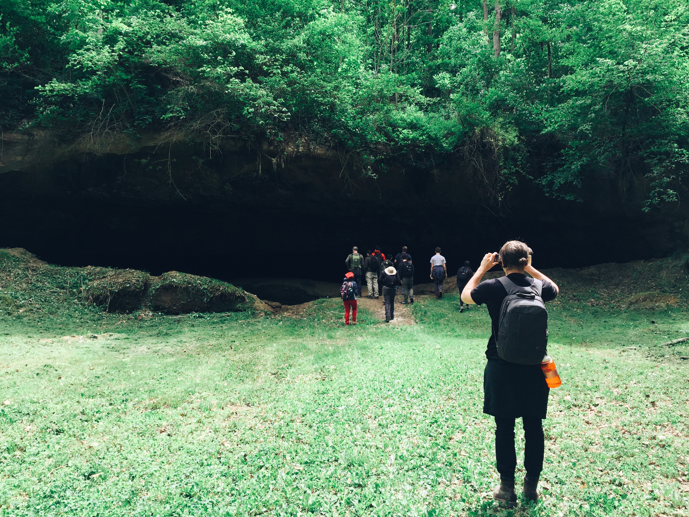

Experience
-
GIS Application Developer
GEI Consultants
June 2017 - Present
Implemented both front-end and back-end aspects of dynamic and responsive GIS applications. Built dozens of features for the Web GIS Applications, which included advanced map interaction, data presentation and advanced query tools. Optimized the performance of legacy SQL queries to improve overall user experience as well as maintain data integrity.
Major projects I've worked on:
Web GIS
Sustainable Groundwater Management Act (SGMA) Data Viewer
Sustainable Groundwater Management Act (SGMA) Map Portal
Flood Emergency Response Information Exchange (FERIX) -
GIS Application Developer
Street Nature Score
August 2016 - June 2017
Created a web app with interactive mapping to enable home seekers to look up the percentage of natural coverage at a given address, resulting in the interests from online real estate companies including Trulia and Zillow.
-
University of California Berkeley
Go bears!
August 2016 - June 2017
Master of Engineering in Transportation Engineering
-
Data Analyst
MyGreenCar, Berkeley Lab
January 2017- Map 2017
Developed a multinomial choice model to analyze how people’s travel habits and socioeconomic characteristics affect their behavior of buying a PEV (Plug-in Electric Vehicle), helping the MyGreenCar app better match the greenest car with user’s unique driving style.
-
GIS Analyst
OSU Food Mapping Team
January 2015 - May 2015
Performed spatial analysis and created maps to visualize the relationship among food access, affordability and sociodemographic variables (e.g. poverty levels) in central Columbus, providing the OSU Food Mapping Team with food environment indicators for imposing policy interventions.
-
Ohio State University
Go buckeyes!
August 2014 - June 2016
Bachelor of Science in Geographic Information Science
Dean's list for all semesters


{kind=link}
{kind=link}
{kind=link}
{kind=link}
{kind=link}
{kind=link}
{kind=link}
{kind=link}
{kind=link}